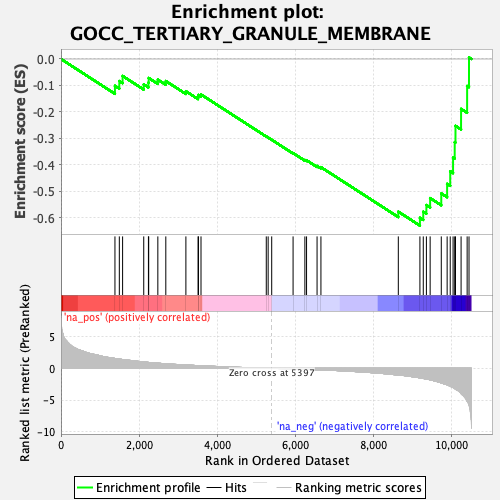
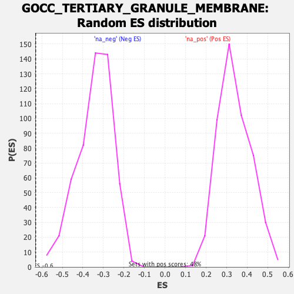

| Dataset | qlf.KOd4vsWTd4_gsea_score |
| Phenotype | NoPhenotypeAvailable |
| Upregulated in class | na_neg |
| GeneSet | GOCC_TERTIARY_GRANULE_MEMBRANE |
| Enrichment Score (ES) | -0.6305955 |
| Normalized Enrichment Score (NES) | -1.8377937 |
| Nominal p-value | 0.0 |
| FDR q-value | 0.031717822 |
| FWER p-Value | 0.814 |

| SYMBOL | RANK IN GENE LIST | RANK METRIC SCORE | RUNNING ES | CORE ENRICHMENT | |
|---|---|---|---|---|---|
| 1 | DYNLL1 | 1381 | 1.557 | -0.1014 | No |
| 2 | ATP8B4 | 1493 | 1.459 | -0.0835 | No |
| 3 | CYBB | 1577 | 1.393 | -0.0642 | No |
| 4 | RAB14 | 2118 | 0.997 | -0.0962 | No |
| 5 | CYBA | 2238 | 0.930 | -0.0894 | No |
| 6 | GAA | 2245 | 0.927 | -0.0718 | No |
| 7 | NRAS | 2479 | 0.813 | -0.0782 | No |
| 8 | LAMTOR3 | 2683 | 0.725 | -0.0834 | No |
| 9 | LAIR1 | 3197 | 0.527 | -0.1221 | No |
| 10 | LAMTOR2 | 3509 | 0.426 | -0.1434 | No |
| 11 | ATP11A | 3519 | 0.423 | -0.1360 | No |
| 12 | VAMP8 | 3584 | 0.404 | -0.1342 | No |
| 13 | ADAM10 | 5255 | 0.027 | -0.2931 | No |
| 14 | COPB1 | 5303 | 0.018 | -0.2972 | No |
| 15 | RAP2C | 5394 | 0.001 | -0.3058 | No |
| 16 | STOM | 5941 | -0.087 | -0.3562 | No |
| 17 | UBR4 | 6243 | -0.143 | -0.3822 | No |
| 18 | RAP2B | 6286 | -0.152 | -0.3832 | No |
| 19 | SLC2A3 | 6555 | -0.211 | -0.4047 | No |
| 20 | SNAP23 | 6654 | -0.236 | -0.4094 | No |
| 21 | HGSNAT | 8635 | -1.049 | -0.5779 | No |
| 22 | ADAM8 | 9188 | -1.511 | -0.6011 | Yes |
| 23 | ITGB2 | 9274 | -1.590 | -0.5781 | Yes |
| 24 | KCNAB2 | 9354 | -1.678 | -0.5528 | Yes |
| 25 | ITGAM | 9450 | -1.801 | -0.5266 | Yes |
| 26 | CD47 | 9735 | -2.292 | -0.5089 | Yes |
| 27 | VAMP1 | 9885 | -2.585 | -0.4726 | Yes |
| 28 | TSPAN14 | 9964 | -2.804 | -0.4252 | Yes |
| 29 | ANO6 | 10037 | -3.011 | -0.3732 | Yes |
| 30 | NBEAL2 | 10079 | -3.187 | -0.3148 | Yes |
| 31 | ATP6AP2 | 10099 | -3.252 | -0.2530 | Yes |
| 32 | TMC6 | 10242 | -3.979 | -0.1888 | Yes |
| 33 | CD53 | 10397 | -5.183 | -0.1022 | Yes |
| 34 | TMEM63A | 10445 | -5.761 | 0.0060 | Yes |
